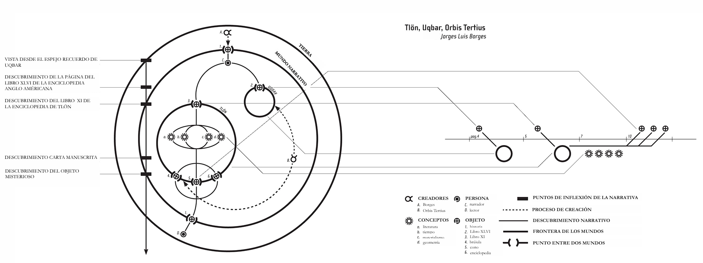
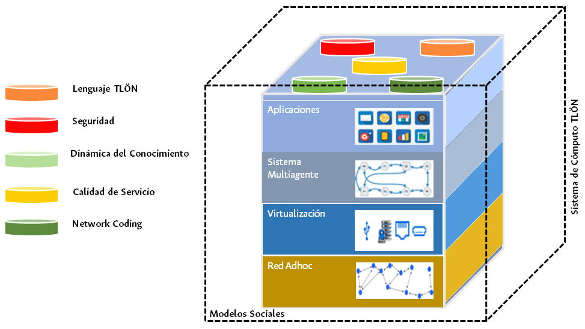
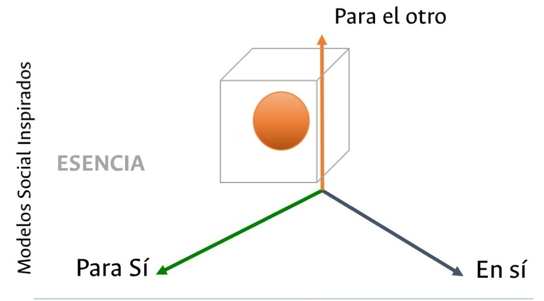
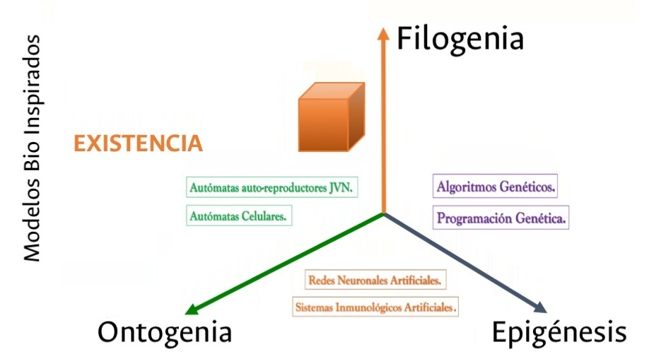

TLÖN nace del deseo de comprender lo invisible: las conexiones humanas y tecnológicas que sostienen los sistemas distribuidos del presente y el futuro.
“La realidad se halla en constante devenir; el universo de Tlön no es un hallazgo, sino una invención.”
Jorge Luis Borges, Ficciones
El proyecto del Grupo de Investigación en Redes de Telecomunicaciones Dinámicas y Lenguajes de Programación Distribuidos – TLÖN, propone un esquema de computación inspirado en modelos sociales que, si bien resultan inviables en la práctica cotidiana, son plenamente factibles en entornos artificiales controlados.

Este sistema se fundamenta en una base conceptual compuesta por la Justicia de John Rawls, la Inmanencia de Baruch Spinoza, el Paradigma de Thomas Kuhn, la noción de Estado de Thomas Hobbes, y las concepciones de existencia y esencia de Jean-Paul Sartre. A partir de estos referentes, se construye una analogía integral con un esquema de virtualización inalámbrica, esencial para llevar dichos modelos sociales al ámbito computacional.
El modelo propuesto constituye una abstracción de nivel superior frente a los enfoques bio-inspirados tradicionales. Como se muestra en la figura, sus componentes están diseñados para operar sobre una red Ad Hoc, enfrentando condiciones dinámicas, estocásticas e inalámbricas propias de este tipo de arquitectura.

La mejor forma de representar las dimensiones del proyecto TLÖN es mediante un modelo por capas. En la primera capa se encuentra la infraestructura, que incluye la red Ad Hoc. La segunda capa corresponde a la virtualización inalámbrica y al sistema operativo. En la tercera capa se ubica el sistema multiagente, donde operan comunidades de agentes que proveen servicios a lo largo de la red Ad Hoc, dentro del esquema de virtualización. Finalmente, la cuarta capa está compuesta por las aplicaciones específicas del sistema de cómputo. De forma transversal, el lenguaje del sistema y su ontología propia generan las interacciones entre todas las capas.
El proyecto del Grupo de Investigación en Redes de Telecomunicaciones Dinámicas y Lenguajes de Programación Distribuidos – TLÖN propone un esquema de computación innovador, inspirado en modelos sociales que, si bien son inviables en la práctica, resultan altamente viables en entornos artificiales controlados.
Este sistema se fundamenta en un sólido marco teórico que integra conceptos filosóficos y sociológicos clave, como la teoría de la justicia de John Rawls, la inmanencia de Baruch Spinoza, los paradigmas de Thomas Kuhn, la noción de Estado de Thomas Hobbes y las concepciones de existencia y esencia de Jean-Paul Sartre. La conjunción de estos principios genera una analogía completa para un esquema de virtualización inalámbrica, indispensable para implementar dichos modelos sociales en sistemas computacionales.


El modelo social resultante representa una abstracción superior a los enfoques bio-inspirados tradicionales, constituyendo una base teórica robusta para el desarrollo de sistemas complejos. Como se ilustra en la figura, y teniendo presente que la arquitectura propuesta está diseñada para operar sobre una red Ad Hoc, esta aprovecha y gestiona eficientemente todas sus condiciones inherentes: dinámicas, estocásticas e inalámbricas. Esto posiciona al proyecto TLÖN a la vanguardia de la exploración de nuevas fronteras en la computación distribuida y las telecomunicaciones.